Owners struggled to find help across disconnected flows. In a two-week sprint I designed Dyson's first centralized Support Home — built entirely from existing platform modules — and turned it into the template five more markets adopted.
00 Overview
Dyson owners entered support through 8+ disconnected steps and dead-ended constantly. The brief said "design a Support Home page for Australia and New Zealand." What shipped was bigger: a behaviour-first entry system, validated with owners, that became the standard for every M2 market.
Troubleshooting, spare parts and service pages all existed — but with no front door connecting them, owners bounced between flows or gave up and called support.
Two months post-launch: bounce −12.3% (desktop), −15% (mobile), exit −25.7% (mobile) — and a tested template adopted by SG, KR, IN and TR.
Accountable for the end-to-end experience across 6 global markets — from research and information architecture to delivery and measurement.
01 Context
Premium owners expect premium care — and every failed self-serve attempt becomes a phone call. ANZ, the smallest market on the M2 platform, was the right test bed to learn fast before rolling out across APAC.
A confusing support flow undercuts the product story Dyson tells pre-purchase.
Reducing avoidable contacts protects the cost-to-serve ratio across APAC.
Learn fast in the smallest M2 market, then scale the pattern to SG, KR, IN and TR.
Before designing anything, I audited what each M2 market actually offered. Every region had reinvented support locally — and the gap was stark: only the UK had a Support Home and a Guides path. Every APAC market on M2 was missing both.
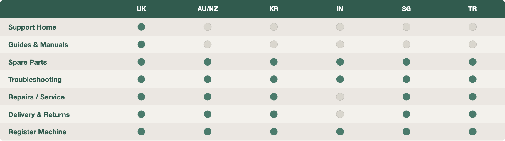
No new backend capability, no new components. The platform was what it was.
Troubleshooting, Spare Parts and Service Centres already existed. The win was the connective tissue — not new pages.
02 Clarify Problems
The brief arrived page-shaped. But ANZ wasn't just a market problem — it was a system gap. Treating it as a layout exercise would have shipped a prettier dead end.
A page-shaped problem, scoped as a content layout exercise.
A behaviour-shaped problem — solvable inside the platform constraints by re-organising existing modules and copy.
03 Shape Concept
Each option made a different bet on how owners think when something goes wrong — and each came with an honest trade-off.
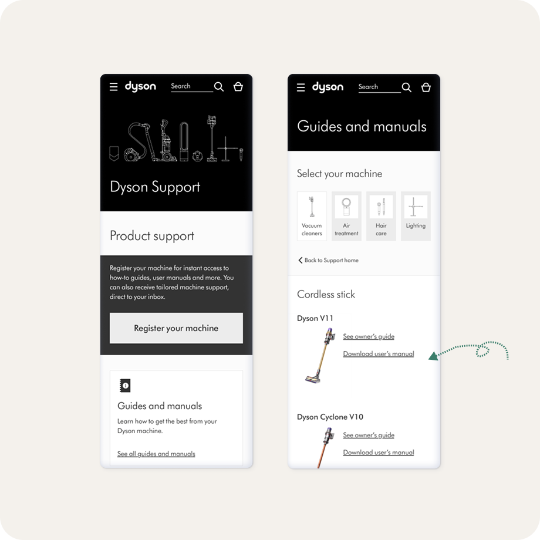
Option A · Service first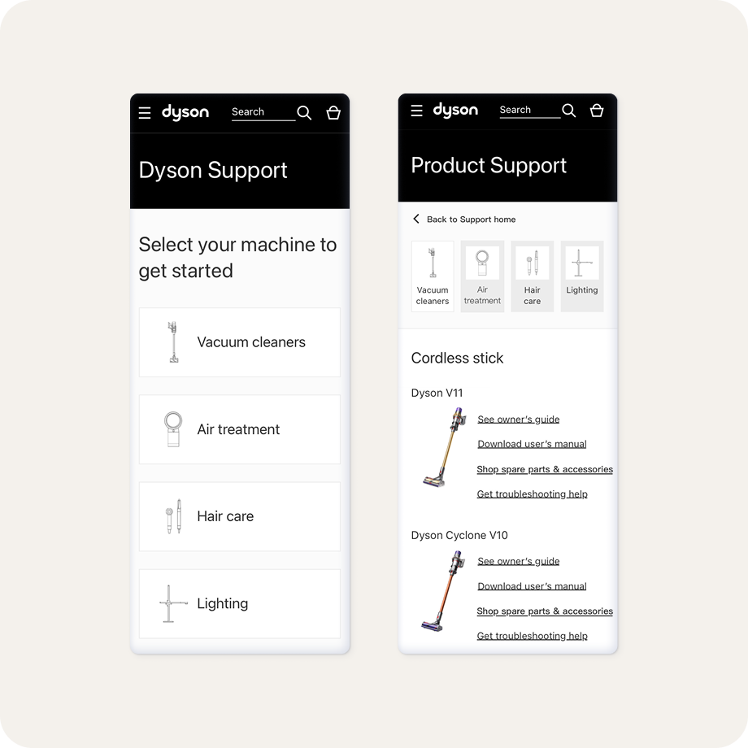
Option B · Product first, range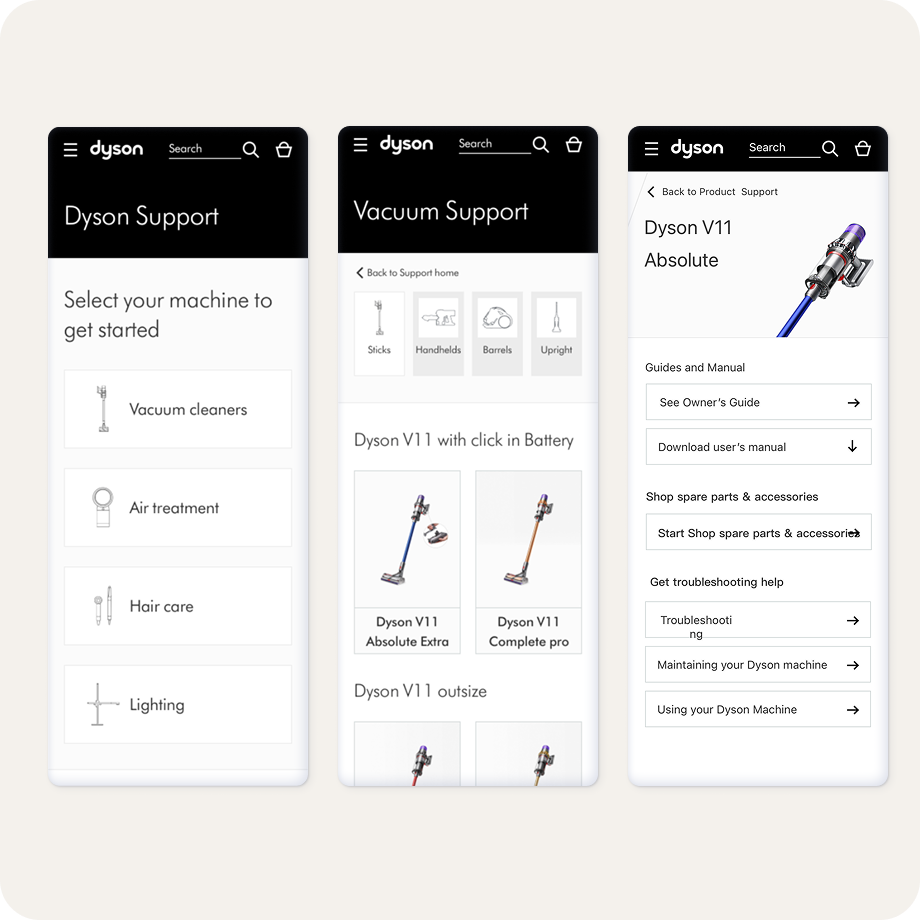
Option C · Product first, SKU04 Test & Ship
Usability testing made the mental model unmistakable — SKU-level scored highest (SUS 84.75). But the decision wasn't the winner-take-all kind: the lightest model unlocked the heaviest one.
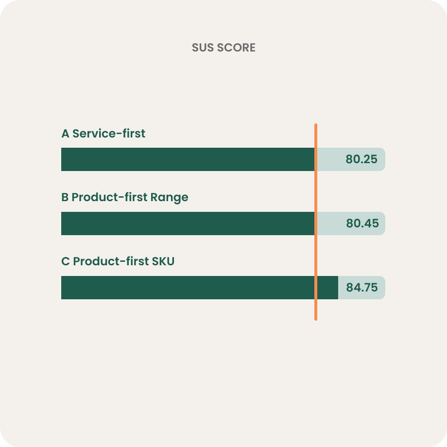
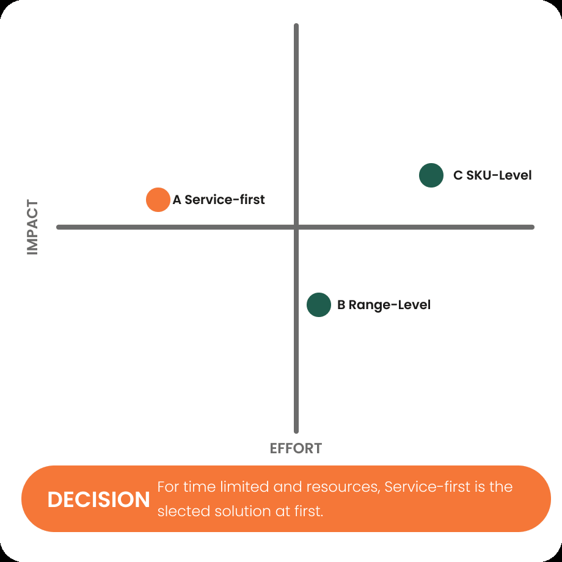
Two assumptions didn't survive contact with owners. Both fixes were retested clean before launch.
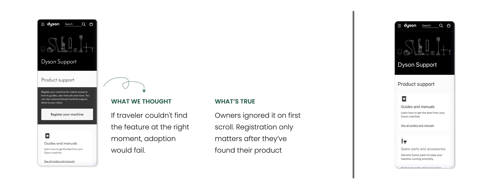
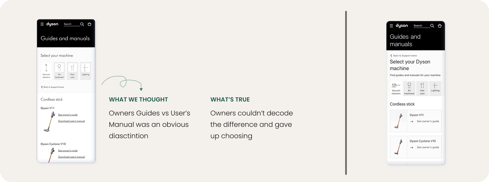
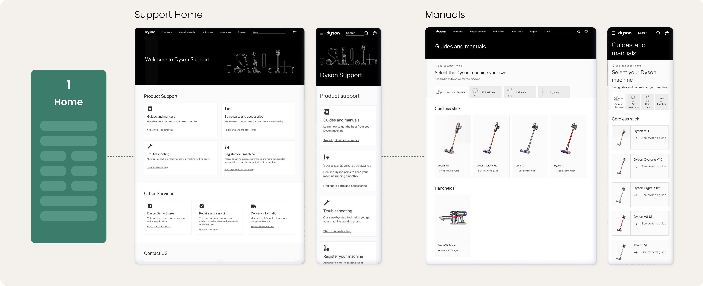
05 Impact
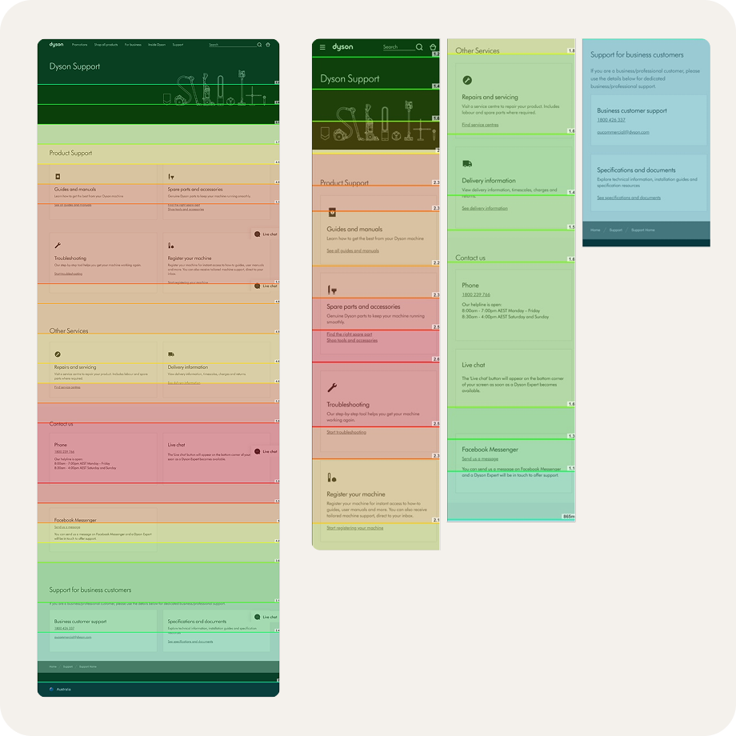
06 Scale
What we shipped wasn't just a market page — it was a tested template every M2 market could adopt. AU/NZ became the blueprint for Singapore, Korea, India and Turkey.
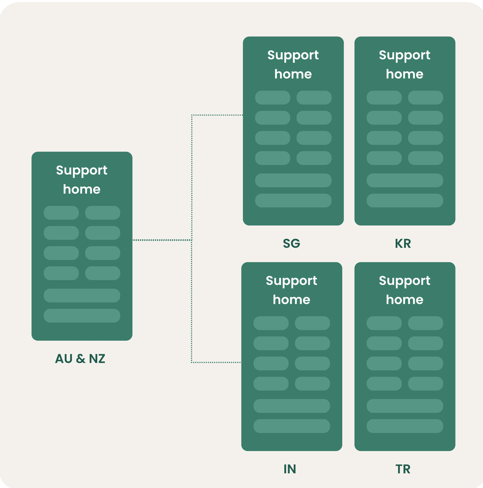
Product support first, other services second — one order, every market.
Service card, product picker, owner block — reusable without engineering.
Specific verbs, no dead-ends — codified so every localisation stays navigable.
Instead of rebuilding the platform, we targeted the moments with the most user pain and the clearest opportunity to ship. Designed once, tested once, adopted five times — and the SKU-level model the tests validated became the north star for the next platform generation.